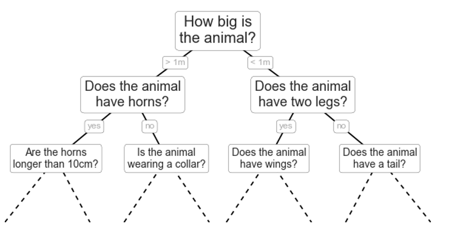
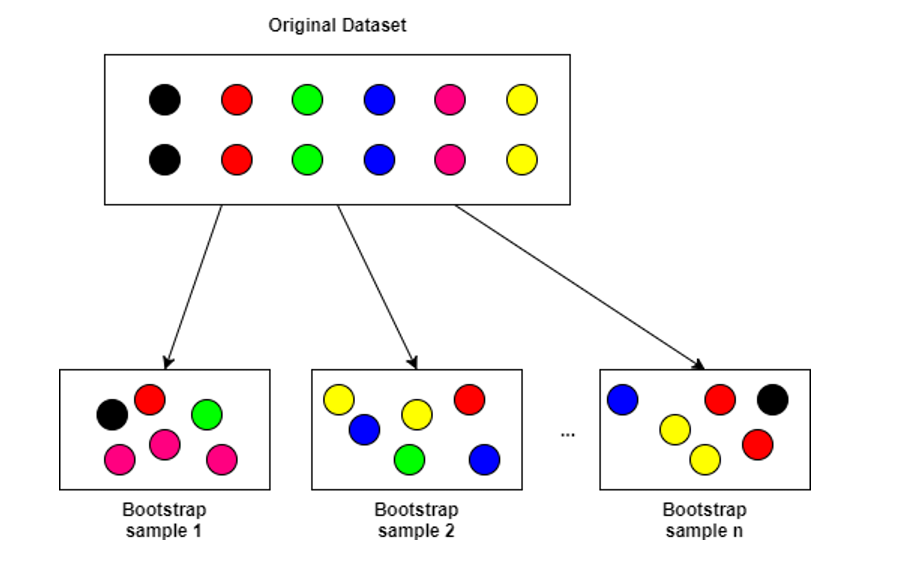
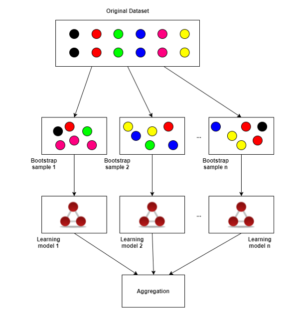

Random Forest Visualization : Introduction

Difference between Random Forests and Decision Trees
Decision trees are extremely intuitive ways to classify or label objects: you simply ask a series of questions designed to zero-in on the classification. For example, if you wanted to build a decision tree to classify an animal you come across while on a hike, you might construct the one shown here:
Image Courtesy - https://jakevdp.github.io
The binary splitting makes this extremely efficient: in a well-constructed tree, each question will cut the number of options by approximately half, very quickly narrowing the options even among a large number of classes. The trick, of course, comes in deciding which questions to ask at each step. In machine learning implementations of decision trees, the questions generally take the form of axis-aligned splits in the data: that is, each node in the tree splits the data into two groups using a cutoff value within one of the features Random Forests are an ensemble of k untrained Decision Trees (trees with only a root node) with M bootstrap samples (k and M do not have to be the same) trained using a variant of random subspace method or feature bagging method. The procedure for training a random forest is as follows:
- At the current node, randomly select p features from available features D. The number of features p is usually much smaller than the total number of features D.
- Compute the best split point for tree k using the specified splitting metric (Gini Impurity, Information Gain, etc.) and split the current node into daughter nodes and reduce the number of features D from this node on.
- Repeat steps 1 to 2 until either a maximum tree depth l has been reached or the splitting metric reaches some extrema.
- Repeat steps 1 to 3 for each tree k in the forest.
- Vote or aggregate on the output of each tree in the forest.
Image Courtesy - https://medium.com
Compared with single decision trees, random forests split by selecting multiple feature variables instead of single features variables at each split point. Intuitively, the variable selection properties of decision trees can be drastically improved using this feature bagging procedure. Typically, the number of trees k is large, on the order of hundreds to thousands for large datasets with many features.
Bootstrap Aggregation(Bagging)
Bootstrap Aggregation, or bagging is a powerful technique that reduces model variances (overfitting) and improves the outcome of learning on limited sample (i.e. small number of observations) or unstable datasets. Bagging works by taking the original dataset and creating M subsets each with n samples per subset. The n individual samples are uniformly sampled with replacement from the original dataset. The diagram illustrates this.
Image Courtesy - https://towardsdatascience.com
In the diagram, the labels corresponding to each data point are preserved. In other words, each data tuple (X,Y)ᵢ is sampled and subsetted where each Xᵢ is a vector of inputs and Yᵢ is a vector of responses. Theoretically, as the number of bootstrap samples M approaches infinity, bagging is shown to converge to the mean of some non-bagged function estimator utilizing all possible samples from the original dataset
Ensemble Methods
Next, k individual learning models (called an ensemble) are created for each M bootstrap sample. The outputs of each individual learning model are then aggregated or averaged in some way, such as voting or simple means averaging. This is illustrated in the figure below.
Image Courtesy - https://towardsdatascience.com
In general, bagging with ensemble models is a robust method for reducing the variance and overfitting of your learning models by utilizing bootstrap samples and aggregating the output (mean, median, other more complicated methods) of the learning ensembles. Bagging and ensembles are general and can be applied to any supervised model from neural networks to SVMs to decision trees, as well as unsupervised clustering models (to be covered in another article). In practice, M is chosen to be at least 50 and n is 80% of the size of the original dataset.